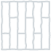

OUT OF SYNC · Gate A contact sheet (real imported files, shown at 1:1 = 64px game tile scale)
1 floor / grass
grass.png
scribble-dungeons · 64×64tile.png
scribble-dungeons · 64×64tile_grass.png
scribble-platformer · 64×64
2 path
path.png
scribble-dungeons · 64×64path_curve.png
scribble-dungeons · 64×64path_crossing.png
scribble-dungeons · 64×64
3 tree / canopy
tree.png
scribble-dungeons · 64×64background_tree.png
scribble-platformer · 64×128tile_treeTop.png
scribble-platformer · 64×64tile_treeTrunk.png
scribble-platformer · 64×64
4 boulder / bush
plants.png
scribble-dungeons · 64×64tile_bush.png
scribble-platformer · 64×64tile_stone.png
scribble-platformer · 64×64barrel.png
scribble-dungeons · 64×64crate.png
scribble-dungeons · 64×64
5 water / edge
water.png
scribble-dungeons · 64×64puddle.png
scribble-dungeons · 64×64tile_water.png
scribble-platformer · 64×64
6 bridge planks
bridge.png
scribble-dungeons · 64×64bridge_end.png
scribble-dungeons · 64×64planks.png
scribble-dungeons · 64×64tile_bridge.png
scribble-platformer · 64×65
7 lantern (MISSING: closest real files)
campfire.png
scribble-dungeons · 64×64tile_flag.png
scribble-platformer · 64×65
8 garden / greenhouse walls
wall.png
scribble-dungeons · 64×64wall_half.png
scribble-dungeons · 64×64wall_corner.png
scribble-dungeons · 64×64wall_damaged.png
scribble-dungeons · 64×64tile_fence.png
scribble-platformer · 64×65door_open.png
scribble-dungeons · 64×64
9 tower / beacon (MISSING: closest real files)
tile_castle.png
scribble-platformer · 64×65tile_column.png
scribble-platformer · 64×64wall_curve.png
scribble-dungeons · 64×64stairs_down.png
scribble-dungeons · 64×64tile_blockWindow.png
scribble-platformer · 64×64
10 two symbiotes
yellow_character.png
scribble-dungeons · 64×64green_character.png
scribble-dungeons · 64×64purple_character.png
scribble-dungeons · 64×64character_roundYellow.png
scribble-platformer · 64×64character_roundGreen.png
scribble-platformer · 64×64
11 foreground detail
tiles_decorative.png
scribble-dungeons · 64×64barrels.png
scribble-dungeons · 64×64crate_small.png
scribble-dungeons · 64×64
wood.png
scribble-dungeons · 64×64 forest border (ink-forest sheet, cropped 128px)
forest.png
ink-forest · 1152×768
Tint test (CSS approximation of Phaser tint, amber #e6b66e / cyan #7be0df)
yellow as-is (amber)
green → cyan (hue shift)